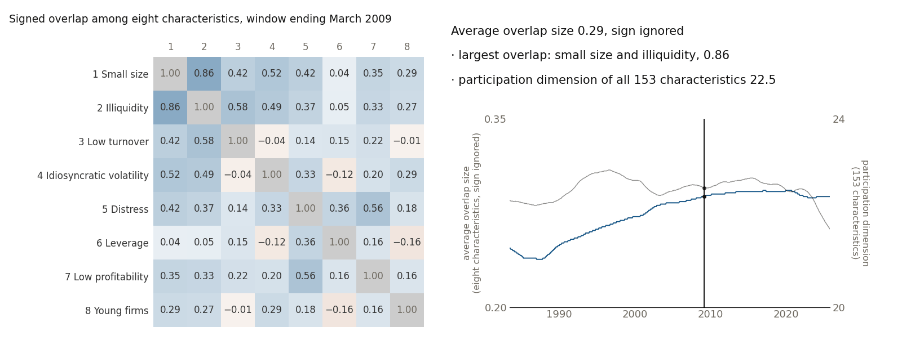

刘明杨
求职论文 特征库与投资组合决策
求职论文（PDF，英文） · 简历（PDF，英文） · 电子邮件 · 帝国理工学院个人主页 · 领英（LinkedIn）
我现任帝国理工学院量化金融卓越中心（Imperial Centre of Excellence in Quantitative Finance）访问研究员，合作导师为 Robert Kosowski 教授；并兼任毕马威英国（KPMG LLP）资本成本团队的人工智能与机器学习顾问。我的主要研究领域是实证资产定价、机器学习与金融大数据、金融计量。研究中，我使用大规模股票特征面板和正则化的机器学习估计方法。我追问：因子模型给出的答案，包括因子、阿尔法和投资组合，哪些反映了数据中的信息，哪些只反映了模型衡量这些信息的方式。我从识别与统计推断出发，逐层追踪这些衡量上的选择，直到投资者最终的持仓。
我于 2026 年获帝国理工学院金融学博士学位，导师为 Paolo Zaffaroni 教授与 Pasquale Della Corte 教授；2020 年以 Distinction（最高等级）成绩获金融学研究型硕士学位（MRes in Finance）。此前，我在密歇根大学获理学学士学位（经济学、数学双专业，金融数学与风险管理方向），在哥伦比亚大学获经济学硕士学位（金融计量方向）。

| 特征 | 1 | 2 | 3 | 4 | 5 | 6 | 7 | 8 |
|---|
带符号重叠的刻度：+1 表示同一批股票在两个特征上都得高分，−1 表示相反。0 表示分数不同步。每个特征都已调整符号，使行名所指的特质得高分。对角线格按构造恒为 1。读数中的平均值不计正负。
用滑块或方向键移动窗口，表格随之更新。
在各窗口中，重叠大小的平均介于 0.24 至 0.29。小市值与低流动性之间的重叠介于 0.61 至 0.93。整个特征库的参与维数介于 21.7 至 22.9。
图 1 展示的，是特征尺子量出、而普通尺子直接假定为零的部分：八个彼此相关的特征在股票之间重叠多少，从 1983 年到 2025 年逐月重新估计。1下一节说明什么是尺子，以及模型为什么需要尺子。
研究主线
信息相同，答案却不同：相信因子模型的结论之前，先检查它用的尺子。
因子模型用少数几个共同驱动因素来解释大量股票的收益。以公司特征（规模、估值、动量等）为基础的因子模型会给出三个答案：哪些风险被定价，预期收益中还有多少没有被模型的因子解释（即阿尔法），以及应当持有什么。我想弄清：每个答案中，有多少来自数据里的信息，又有多少来自并不增加任何信息的选择。其中最核心的选择是“尺子”。要说清一只股票的预期收益有多少归功于哪个驱动因素，模型得先判断两个特征方向是否真的不同、各自有多大；做这个判断的规则，就是尺子。我让这把尺子由数据本身估计出来。我证明，换尺子只改变收益在因子与“没有被任何因子解释的部分”（即截距；阿尔法与之相近，但阿尔法是相对于某个指定基准模型而言的）之间怎样拆分，不改变拟合优劣；我还把尺子本身的估计误差计入置信区间。在此基础上，我追问两件事：“更小的阿尔法”究竟反映了什么？尺子，乃至特征库的写法本身，又如何改变投资者的持仓？研究者和管理人经常调整这类约定，而约定一变，很容易被误当成新发现。
给每个特征一个权重再相加，每只股票就得到一个分数；这样的加权组合称为特征方向（它不是投资组合）。普通尺子（欧氏度量）只看方向的权重本身；特征尺子（格拉姆度量）则看这个方向给真实股票打出的分数：分数通常有多大，两个方向的分数在股票之间是否同高同低。
尺子，是模型用来衡量一个特征方向有多大、两个特征方向重叠多少的规则。两个价值信号若总是选中同一批便宜的股票，特征尺子会把它们算作重叠，普通尺子却把它们当作互不相关。
建议阅读顺序
每篇论文都尽量固定其他一切，只改变一项选择，再看哪些结果随之改变。
时间有限？请先读求职论文。
研究
特征库与投资组合决策
信息相同，持仓却不同：复制或重新加权特征库中已有的特征，不增加任何信息，却会改变调好参数的投资规则的持仓，原因是模型对大额押注的惩罚，对被复制的主题收费更低。扣除交易成本后收益是升是降，取决于方法、成本水平以及缺失收益的估值方式。
英文题目 Characteristic Libraries and Portfolio Decisions · 论文页面 · PDF（英文）
基于特征的因子模型中识别问题的几何框架
数据相同，因子却可能不同：哪些特征方向算作彼此不同，取决于所用的尺子。本文从特征在股票之间的分布与重叠中取得这把尺子，并在其上建立识别、无套利约束与推断。
本文是《特征空间度量》较早、范围较宽的版本。
英文题目 A Geometric Framework for Identification in Characteristic-Based Factor Models · 论文页面 · PDF（英文） · SSRN
因子模型中的特征空间度量：识别与推断
拟合收益相同，拆分却不同：尺子决定收益如何归于潜在因子（从数据中推断出的共同驱动因素）、可观测因子（如市场因子）与截距。当尺子由数据估计时，它的误差也必须计入置信区间。
英文题目 Characteristic-Space Metrics in Factor Models: Identification and Inference · 论文页面 · PDF（英文） · SSRN
如何解读估计的定价误差：来自基于特征的收益预测的证据
尺子相同，目标却不同：阿尔法变小，可能是因为因子解释得更多，也可能是因为因子要解释的预期收益估计（目标）变了。本文在同一批股票上交叉搭配各模型的预期收益估计与因子，发现两种训练方式之间阿尔法的较大差距主要来自目标不同。
英文题目 Interpreting Estimated Pricing Errors: Evidence from Characteristic-Based Return Forecasts · 论文页面 · PDF（英文）
特征几何与投资组合选择
预测相同，组合却不同：组合规则里有一个为数值稳定而设的固定小常数，它写在尺子的单位里，换尺子就改变了每个个股头寸被压低的程度；只去掉这个常数，权重差距几乎消失。
英文题目 Characteristic Geometry and Portfolio Choice · 论文页面 · 幻灯片（PDF，英文）
学术经历
联系方式
| 电子邮件 | yang.liu19@imperial.ac.uk |
| 帝国理工学院个人主页 | profiles.imperial.ac.uk/yang.liu19 |
| 领英 | linkedin.com/in/mingyang-buweinan |
| ORCID | 0009-0008-5418-2563 |
本图为描述性展示，数据来自作者的研究资料，不来自本站任何一篇论文。特征：Jensen–Kelly–Pedersen 数据库的 153 个美国股票特征（JKP153），与求职论文所用的特征库相同；每个特征在月内按排名标准化、以 0 为中心，并调整符号，使行名所指的特质得高分。每个窗口对这些特征逐月的 153×153 二阶矩矩阵在截至该月的 240 个月内取等权平均。窗口截止于 1983 年 6 月至 2025 年 11 月。共 510 个窗口，任何窗口都不使用未来月份。240 个月等权窗口是本图自己的选择。《特征几何》报告的是特征尺子的滚动 60 个月版本、等权 120 个月版本与指数加权移动平均（EWMA）版本，路径随窗口而变。表格取其中 8×8 的分块：市值（符号反转）、Amihud 非流动性、换手率（反转）、特质波动率、财务困境得分（Ohlson O 值）、债务与市值之比、经营盈利（反转）与公司年龄（反转），并把对角线缩放为 1，因此各格近似于相关系数。这个分块是特征库中特意选出的高重叠角落，不是有代表性的样本；全部 153 个特征之间重叠的汇总见《特征空间度量》表 I（第 31 页）与图 1（第 32 页）。每个窗口中重叠最大的一对都是小市值与低流动性；Amihud 非流动性由美元成交量构造，与市值高度重叠在意料之中。会计数据只在新的财务报表公布后才更新，覆盖范围、缺失值的比例和股票池也随时间变化；除了公司之间相对位置的变化，这些变化同样会移动这些平均值。时间轴中的参与维数由完整的 153×153 窗口矩阵计算，不是由 8×8 分块计算；它是数据中变动方向的个数，不是定价风险的个数，介于 21.7 至 22.9。这是描述性的可视化，不是新的估计量，也不是因果检验。↩︎